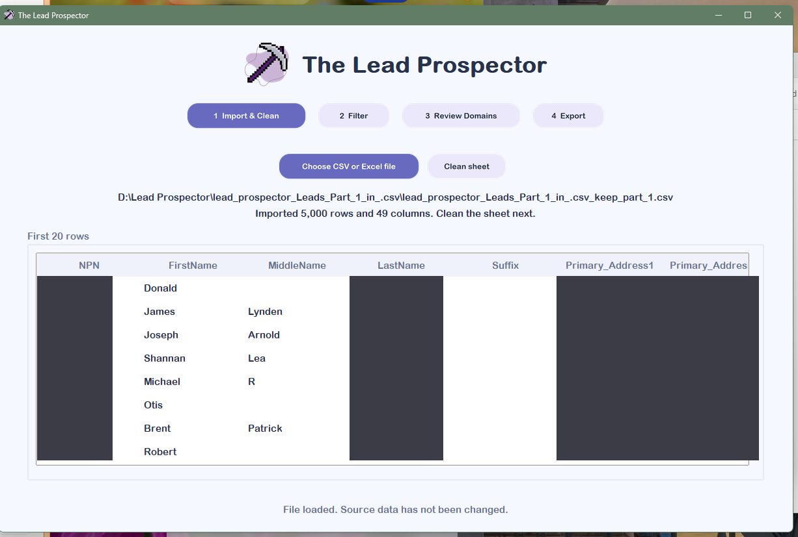
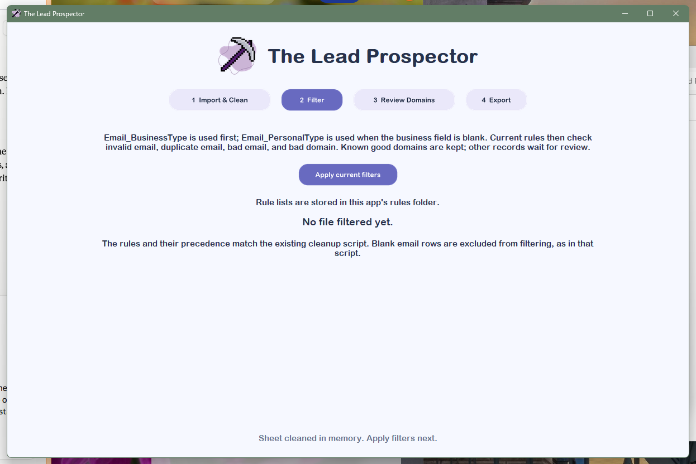
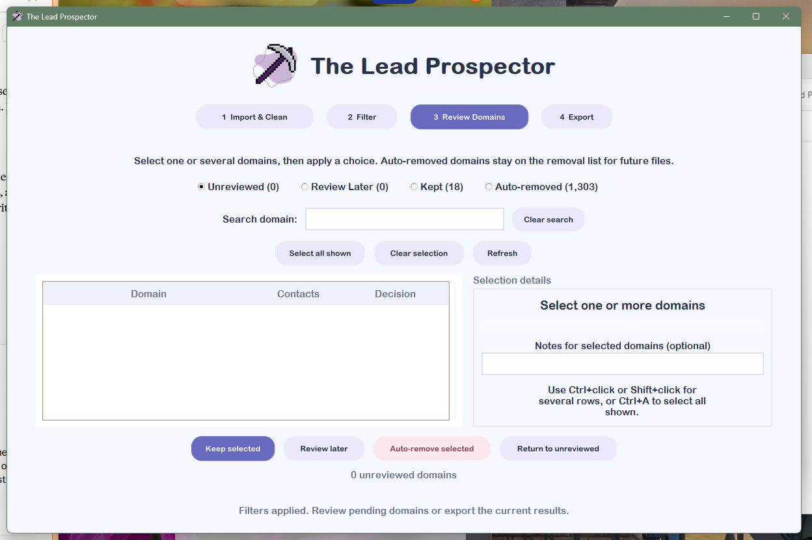
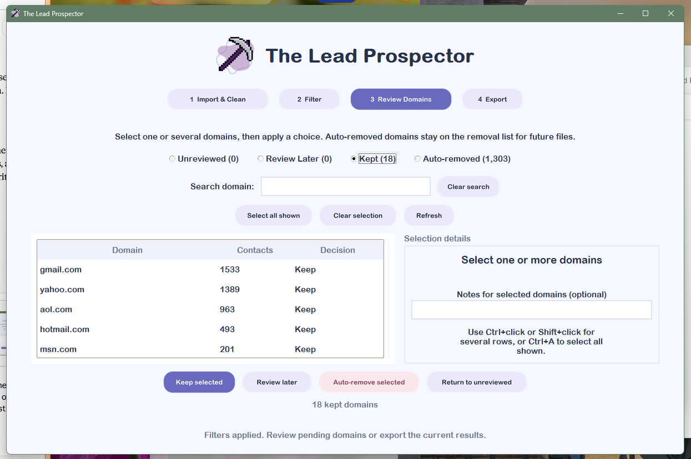
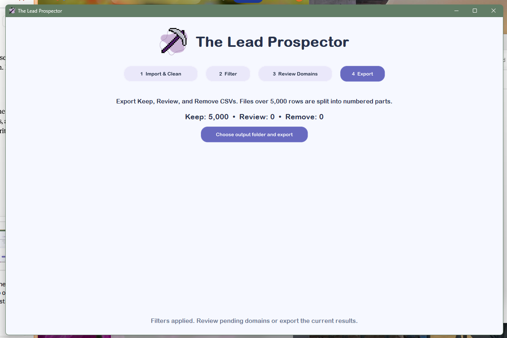

Screenshots use a sample batch. Names, license numbers, and addresses are redacted; the workflow and counts are real.
The Problem
Part of my role involved cleaning purchased lead lists before Marketing or Sales could use them. That meant manually reviewing entries, deciding which ones were viable, and removing bad domains, duplicates, and empty records.
At scale, this stopped being a spreadsheet problem. Files of 10,000+ rows regularly caused Excel to crash, which meant the manual review was often also a fight with the tool being used to review them. A single pass could take a day and a half.
I had started building something to fix this once before and used it while I was regularly doing this cleanup. The project was shelved when my responsibilities shifted. I picked it back up later because the underlying problem had not gone away.
Defining What "Viable" Meant
Before a tool could do this work, the criteria had to exist somewhere other than my own judgment. I went through past lead files and identified the patterns that reliably meant a record was not worth keeping: specific bad domains, malformed or duplicate emails, and empty required fields.
That review became the rule set. The cleaning, filtering, and domain review steps all apply those decisions consistently instead of requiring the same decisions to be made by hand every time a new file comes in.

Giving the System Memory
The rule set alone wasn't enough because new lead files kept surfacing the same bad domains. Reviewing them from scratch every time wasted the effort the tool was supposed to remove.
So domain decisions persist. Once a domain is manually reviewed and marked for removal, the tool remembers it. The next file containing that domain filters it out automatically, with no additional review required. Kept domains work the same way in reverse. A small set of known-good domains, such as Gmail, Yahoo, and AOL, are recognized immediately and never re-flagged.



This means the tool improves with use. Every batch I review makes the next batch faster because fewer domains land in the "needs a human decision" pile.
Designing for What Comes Next
A cleaned file isn't useful on its own. It still has to get into a CRM. I already knew that a single large output file, cleaned or not, could fail or cause problems during CRM imports.
So export isn't just "write one file." Kept, Review, and Remove records are separated, and any output over 5,000 rows is automatically split into numbered parts. The tool is designed around the constraints of the system it's feeding, not just the file it started with.

How It Was Built
The interface and underlying code were built through AI-assisted development using Codex and Python, the same approach noted on the NFIRA Product Design page for parts of that project. I didn't write the code by hand. I defined the filtering criteria, domain-memory behavior, and export constraints, then directed and tested the implementation against real lead files until its decisions matched the ones I would have made manually.
That distinction matters for what this project demonstrates. It isn't meant to show engineering ability. It shows my ability to define a problem precisely, account for edge cases and downstream systems, and direct the development of a working tool that holds up against real data.
What It Demonstrates
Most projects in my portfolio started from a brief someone else wrote or a system I inherited. This one started because a recurring task had become too inefficient to continue doing by hand, so I designed a system to handle it.
The same lead-cleaning workflow now takes minutes, even with files large enough to previously crash the spreadsheet used to process them.
What I'd Improve
I'd add a lightweight audit log showing which rule caught each record so a reviewer could spot-check the system's decisions without re-running the entire file. I'd also like to collect before-and-after volume data across several batches, rather than relying on the single sample shown here, to verify how the time savings hold up at different file sizes.